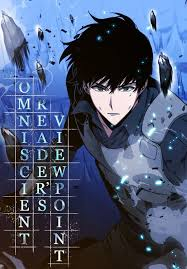
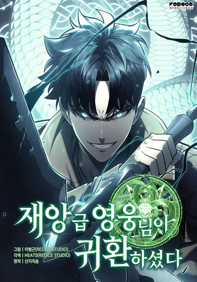
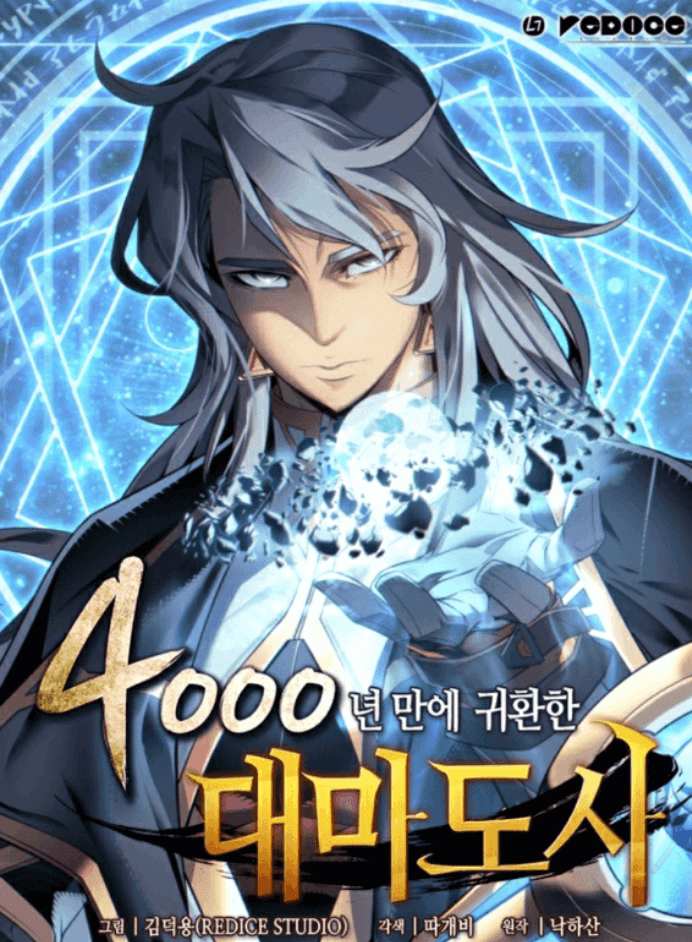
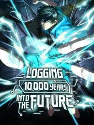
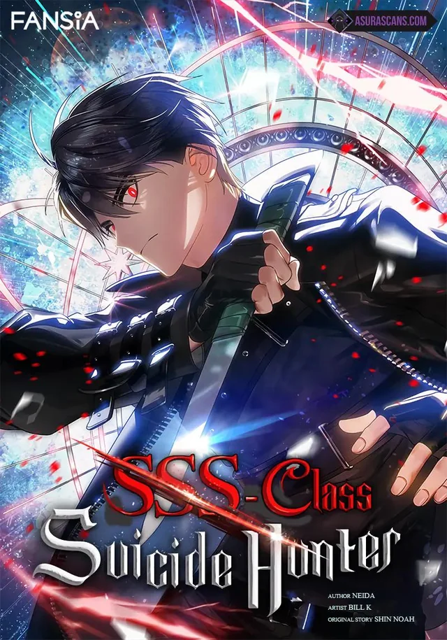
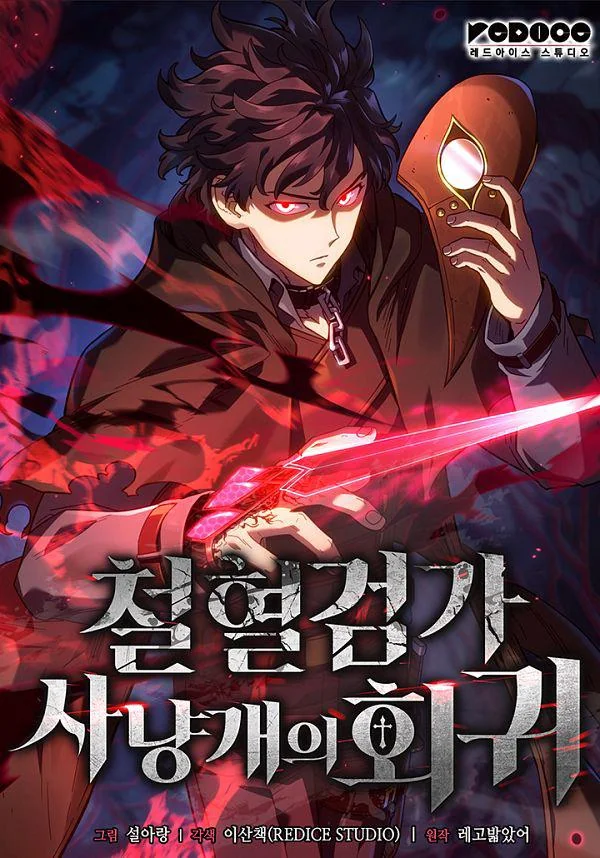
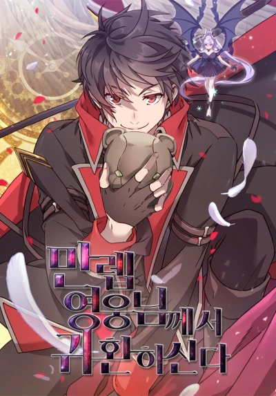
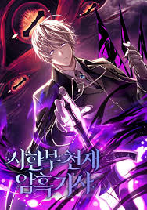
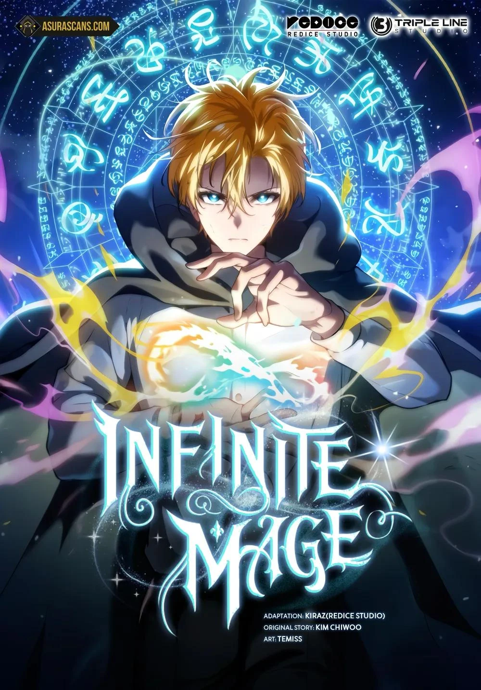
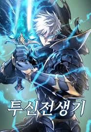

Peakest Manhwa recommendation for you
You can read this by clicking the button below.
To Read
Solo Leveling
Solo Leveling follows Sung Jin-Woo, the weakest hunter in a world where portals connect Earth to monster-filled dungeons. After a near-fatal experience, he gains a mysterious system that allows him to level up infinitely.
As Jin-Woo grows stronger, he uncovers secrets about the hunter system and faces increasingly powerful threats. The story blends action, progression fantasy, and psychological elements.
From underdog to legendary hunter, Solo Leveling delivers satisfying power progression and intense battles while exploring themes of growth, determination, and the cost of power.

Omniscient Reader's Viewpoint
Omniscient Reader follows Kim Dokja, a man who has spent years reading the same web novel about the end of the world. When the apocalypse actually happens, he uses his knowledge to survive and change the story.
Dokja must navigate complex scenarios, form alliances, and make difficult choices as the world he knows crumbles. The manhwa combines meta-narrative elements with intense action and character development.
Blending web novel tropes with fresh twists, this story explores themes of fate, free will, and what happens when fiction becomes reality.

Murim Login
Murim Login follows Jin Tae-Kyung, a low-rank hunter in a modern world where gates and monsters exist. Struggling with a weak reputation and poor skills, he tries to survive as best as he can in dangerous dungeon raids.
Everything changes when he accidentally logs into a mysterious virtual reality system and gets transported into the world of Murim, a martial arts universe filled with sects, clans, and powerful warriors. Unlike a game, the world feels completely real, and every action has serious consequences.
In Murim, Jin Tae-Kyung starts as a weak martial artist, but he grows rapidly by training, completing quests, and learning ancient techniques. His modern mindset and survival experience give him an unexpected advantage in this harsh world.
As he becomes stronger, he gets involved in conflicts between rival sects, demonic forces, and hidden conspiracies that threaten both Murim and the real world. His journey becomes a mix of survival, power growth, and uncovering deeper secrets about the system connecting the two worlds.
Murim Login blends action, comedy, and martial arts progression, showing the rise of an underdog who slowly becomes a force strong enough to change two worlds.

The Return of the Disaster Class Hero
The Return of the Disaster Class Hero follows Lee Geon, once known as one of the most powerful heroes who fought against deadly “Twelve Zodiac Gods.” However, during the final battle, he is betrayed and left to die, leading to his unexpected return after many years.
Now back in the world he once protected, Geon discovers that the heroes who once fought beside him have changed, and the world has been reshaped by corruption, fear, and betrayal. With nothing left but his overwhelming strength and anger, he sets out to reclaim everything that was stolen from him.
Unlike typical heroes, Geon is ruthless, confident, and unafraid to crush anyone who stands in his way. His return shakes the balance of power, as even the strongest organizations and enemies begin to fear his presence once again.
As he hunts down the truth behind his betrayal, Geon also faces powerful new enemies tied to divine forces and hidden conspiracies that go beyond human understanding. Each battle pushes him closer to uncovering the real reason behind his downfall.
The series mixes intense action, dark humor, and revenge-driven storytelling, focusing on a legendary hero who refuses to stay broken and instead returns to dominate everything that once betrayed him.

The Greatest Mage Returns After 4000 Years
The Greatest Mage Returns After 4000 Years follows the story of Lucas Traumen, the greatest archmage in history who was imprisoned by a powerful god-like being known as a Demigod and forced to spend 4000 years in isolation.
After his long imprisonment, his soul finally finds a new vessel in the body of Frey Blake, a weak and talentless student at a prestigious magic academy. Once reborn, Lucas regains his consciousness and begins planning his return to power.
Now living as Frey, he must start from the bottom again while hiding his true identity. Despite his weak body, his ancient knowledge of magic, combat techniques, and forbidden spells gives him a massive advantage over everyone around him.
As he grows stronger, he begins uncovering secrets about the gods, ancient magic organizations, and the truth behind his imprisonment. Each step brings him closer to regaining his full power and seeking revenge against those who betrayed him.
The story combines academy life, intense magical battles, and hidden conspiracies, showing the rise of a legendary mage who refuses to remain broken even after 4000 years of suffering.

Logging 10000 Years Into the Future
Logging 10,000 Years Into the Future follows Lu Sheng, a martial arts student living in a world where humans rely on cultivation and martial power to survive against rising threats from mutated beasts and alien forces.
One day, he gains access to a mysterious dream-like training system that sends him 10,000 years into the future. There, he discovers that humanity has fallen, civilization is in ruins, and powerful enemies now rule the world.
Inside this ruined future, Lu Sheng continues to train endlessly, mastering lost martial arts techniques, refining his body, and uncovering ancient knowledge that no longer exists in his original timeline.
Each time he returns to the present, his strength carries over, allowing him to grow at an unbelievable speed. What once seemed like an average student quickly becomes a rising force capable of challenging top warriors and hidden powers.
The story combines martial arts progression, time travel, and survival elements, focusing on a protagonist who uses the knowledge of a destroyed future to dominate his present world and change humanity’s fate.

SSS-Class Suicide Hunter
SSS-Class Suicide Hunter follows a nameless hunter living in a tower-filled world where people gain powers by clearing deadly floors and hunting monsters. His life is miserable, filled with jealousy toward stronger hunters and an obsession with becoming powerful.
Everything changes when he obtains a rare skill that lets him copy abilities—but with a twist: he can only activate it when he dies. This ability forces him into a cycle of death and revival, where every death becomes a chance to grow stronger.
At first, he struggles to understand his new power, but he soon learns to use it strategically, dying repeatedly to master skills from powerful enemies and hunters he once admired.
As he climbs the tower, he becomes entangled in deeper mysteries involving regression, hidden timelines, and the true nature of the system controlling the world. Each floor reveals more about the dark secrets behind the tower and the people trapped inside it.
The series blends intense action, emotional storytelling, and clever power progression, focusing on a protagonist who turns his suffering and repeated deaths into a path toward becoming one of the strongest hunters in existence.

Revenge of the Iron-Blooded Sword Hound
Revenge of the Iron-Blooded Sword Hound follows Vikir, an illegitimate son of the Baskerville family, a brutal clan known for raising warriors through violence, loyalty, and constant bloodshed.
After being treated as nothing more than a disposable tool and ultimately betrayed by the very family he served, Vikir dies with deep resentment and regret. However, instead of ending there, he is given a second chance when he regresses back to his younger years.
Now armed with memories of his past life, Vikir decides to change his fate. Instead of blindly obeying the Baskerville family, he begins to train in secret, sharpen his skills, and prepare for revenge against those who once discarded him.
As he grows stronger, Vikir navigates the dangerous politics and violent hierarchy of his clan, where trust is rare and betrayal is common. Every step forward brings him closer to the people who destroyed his past life.
The story is a dark fantasy revenge tale filled with brutal combat, strategic growth, and emotional tension, focusing on a protagonist who refuses to remain a victim and instead rises as a force of cold, calculated vengeance.

The Max Level Hero Has Returned
The Max Level Hero Has Returned follows Davey O’Rowane, a weak and ignored prince from a royal family who is considered useless by everyone around him. After suffering humiliation and betrayal, he falls into a deep coma.
However, instead of dying, Davey’s soul travels to a legendary temple where he trains for thousands of years in spirit form. During this time, he reaches the maximum level of strength, mastering swordsmanship, magic, and divine powers beyond imagination.
When he finally returns to his original body in the real world, he is no longer the weak prince everyone remembers. Now fully awakened, he hides his overwhelming strength while slowly taking control of his destiny.
As he begins his return to power, Davey deals with corrupt nobles, political conspiracies, and enemies who once looked down on him. One by one, those who betrayed or ignored him start to realize that the “useless prince” has completely changed.
The series blends fantasy, kingdom politics, and overpowered progression, focusing on a protagonist who comes back from absolute weakness and becomes a force that reshapes the entire world.

Terminally-Ill Genius Dark Knight
Terminally-Ill Genius Dark Knight follows a brilliant but terminally ill man who dies in his original world and is reincarnated into a dark fantasy game-like world as a noble-born knight.
Despite being reborn with a fragile body that is destined to die young, he possesses extraordinary intelligence, deep knowledge of the world’s systems, and a ruthless mindset shaped by his past life.
Determined to survive and change his fate, he chooses the path of a dark knight—mastering forbidden techniques, manipulating power structures, and using strategy over brute strength to overcome stronger opponents.
As he rises through the ranks, he becomes entangled in dangerous political schemes, ancient curses, and conflicts between powerful factions. His condition constantly reminds him that time is limited, forcing him to act decisively and without hesitation.
The story blends dark fantasy, strategy, and psychological elements, focusing on a protagonist who turns his weakness into strength and walks a dangerous path where survival means outsmarting both enemies and fate itself.

Infinite Mage
Infinite Mage follows Shirone, a boy born into poverty who is abandoned as a child and later adopted by a kind family. Despite his humble beginnings, he shows an extraordinary talent for learning and a deep curiosity about the world.
After discovering magic, Shirone becomes fascinated with knowledge, space, and the infinite nature of the universe. His unique way of thinking allows him to grasp complex magical theories that others struggle to understand.
He enrolls in a prestigious magic academy, where he faces discrimination due to his background while competing against nobles and prodigies. Even so, his determination and intelligence help him stand out.
As Shirone grows stronger, he begins to explore deeper aspects of magic, including the concept of infinity and higher-dimensional power. His journey is not just about becoming stronger, but also about understanding the true nature of magic and existence itself.
The story blends academy life, philosophy, and powerful magic battles, focusing on a protagonist whose limitless potential allows him to challenge the very boundaries of what magic can achieve.

Doom Breaker
Doom Breaker follows Zephyr, the last human warrior fighting against demons in a world that has already fallen. After a desperate final battle against the Demon God, he is killed—but instead of dying for good, he is sent back in time by the gods.
Given a second chance, Zephyr returns to a point before the world’s destruction. Armed with memories of the future, he is determined to change fate and prevent humanity’s downfall.
Unlike before, he prepares carefully—training harder, forming stronger alliances, and eliminating threats before they can grow. His knowledge of future events gives him a huge advantage, but it also brings new risks and unexpected consequences.
As he grows stronger, Zephyr faces powerful enemies, including demons, corrupted humans, and divine beings with their own agendas. Each battle brings him closer to rewriting the fate that once doomed the world.
The series combines intense action, time regression, and strategic progression, focusing on a hero who refuses to accept defeat and fights to break a future that was once inevitable.